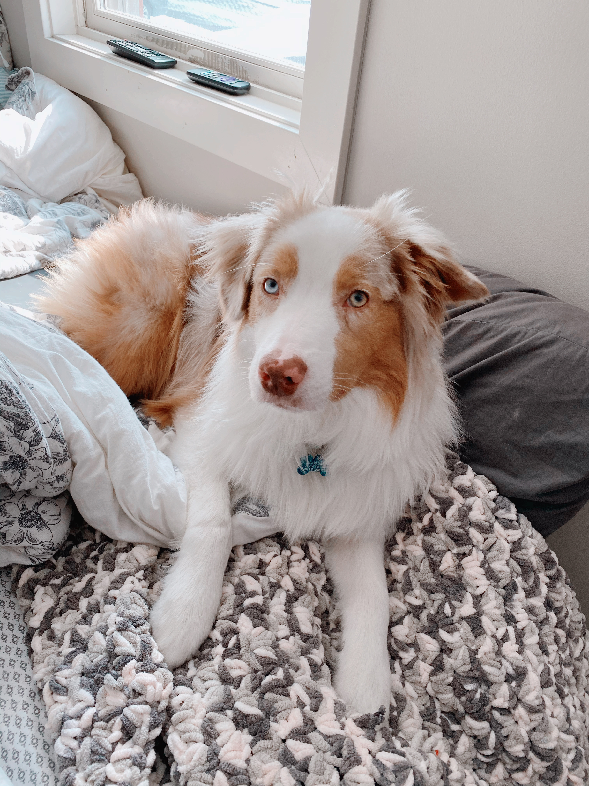

2/21/2021
I got into the art and tech program!!! so very excited and it motivates me to do better and keep going with art. Its the good news I really needed to hear.
I have been celebrating with family and friends back home in brunseick and its so good to be out of my one bedroom apartment for a weekend and its so nice to
hangout with my siblings and friends. For me, getting into the art and tech program validates all of my hard work and that my art is worth it
Anyways I have been working hard on my 3D a nimation and my website but i keep changing my mind on both projects because I feel like the more I work on them, the more I learn
and the more I want to change things to what I have learned. I really like the idea of adding gifs to my wibsite and want it to be kind of a chaotic art piece but at thed same time
I like being organized with it and have it aesthetic with the same color scheme. so that is my struggle with my current projects. Thats all for today! To anyone who actually reads this...
Have a good day!!
Also here is a photo of my cute pup: Charlie
